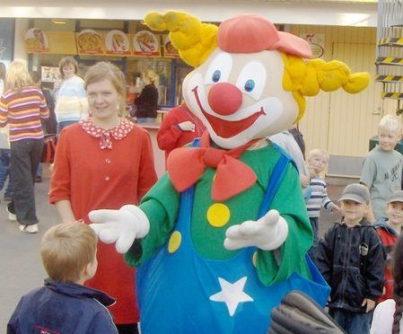
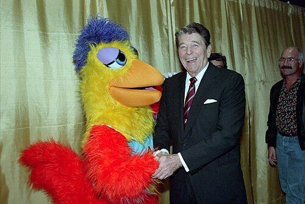
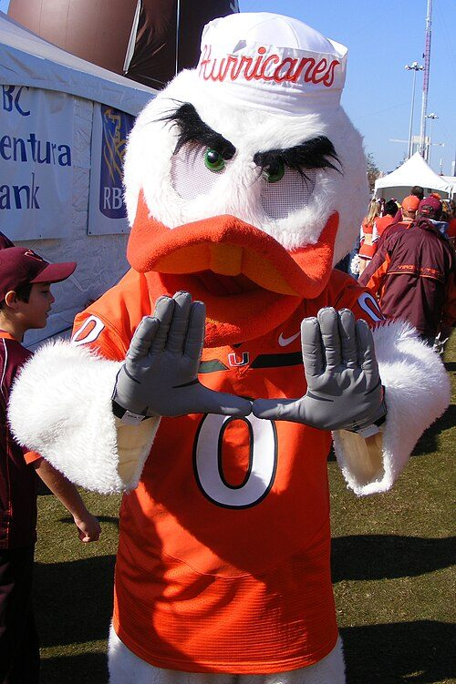
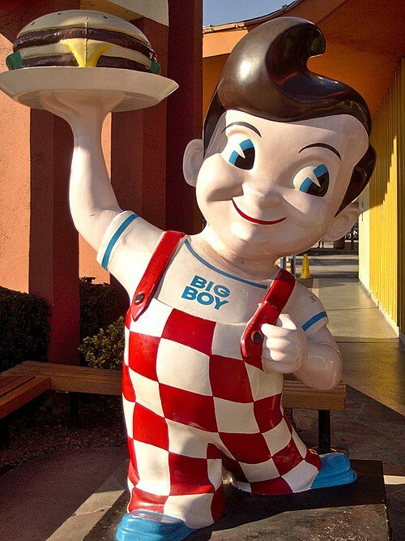
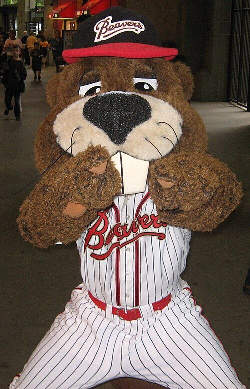
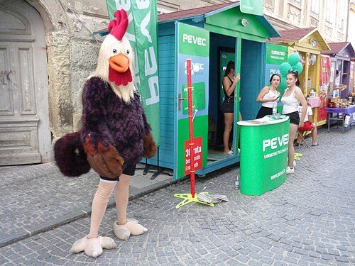
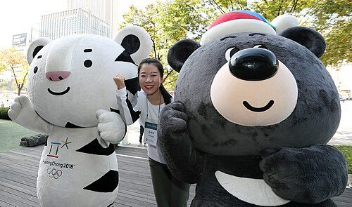
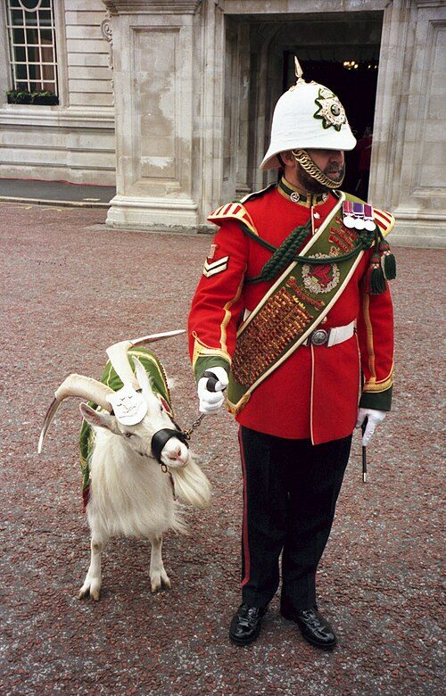
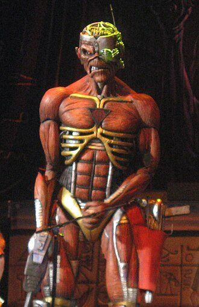
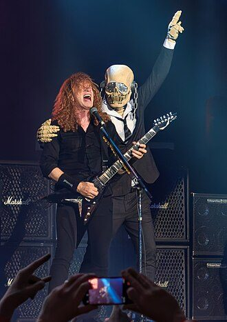

Overview

A mascot is any human, animal, or object thought to bring luck, or anything used to represent a group with a common public identity, such as a school, sports team, society, military unit, or brand name. Mascots are also used as fictional, representative spokespeople for consumer products.
In sports, mascots are also used for merchandising. Team mascots are often related to their respective team nicknames.[Reference 1] This is especially true when the team's nickname is something that is a living animal and/or can be made to have human-like characteristics. For more abstract nicknames, the team may opt to have an unrelated character serve as the mascot. For example, the athletic teams of the University of Alabama are nicknamed the Crimson Tide, while their mascot is an elephant named Big Al. Team mascots may take the form of a logo, person, live animal, inanimate object, or a costumed character, and often appear at team matches and other related events.
Since the mid-20th century, costumed characters have provided teams with an opportunity to choose a fantasy creature as their mascot, as is the case with the Philadelphia Phillies' mascot the Phillie Phanatic; the Philadelphia Flyers' Gritty; the Seattle Kraken's Buoy; and the Washington Commanders' mascot Major Tuddy.
Costumed mascots are commonplace, and are regularly used as goodwill ambassadors in the community for their team, company, or organization.
History
It was sports organizations that first thought of using animals as a form of mascot to bring entertainment and excitement for their spectators.[Reference 2] Before mascots were fictional icons or people in suits, animals were mostly used in order to bring a somewhat different feel to the game and to strike fear in rival teams.
As time went on, mascots evolved from predatory animals to two-dimensional fantasy mascots, and then to what is commonplace today: three-dimensional mascots. Stylistic changes in American puppetry in the mid-20th century, including the work of Jim Henson and Sid and Marty Krofft, soon were adapted to sports mascots. It allowed people to not only have visual enjoyment but also interact physically with the mascots.
Marketers quickly realized the great potential in three-dimensional mascots and took on board the costumed puppet idea. This change encouraged other companies to start creating their own mascots, resulting in mascots being a necessity amongst not only the sporting industry but for other organisations.[Reference 3][Reference 4]
Etymology
The word 'mascot' originates from the French term 'mascotte' which means lucky charm. This was used to describe anything that brought luck to a household. The word was first recorded in and popularised by a French composer Edmond Audran who wrote the opera La mascotte, performed in . The word entered the English language in with the meaning of a specific living entity associated with a human organization as a symbol or live logo. However, before this, the terms were familiar to the people of France as a slang word used by gamblers. The term is a derivative of the word 'masco' meaning sorceress or witch. Before the 19th century, the word 'mascot' was associated with inanimate objects that would be commonly seen such as a lock of hair or a figurehead on a sailing ship. From then to the twentieth century, the term has been used in reference to any good luck animals, objects etc., and more recently including human caricatures and fictional creatures created as logos for sports teams.[Reference 3][Reference 5]
Choices and identities



Often, the choice of the mascot reflects the desired quality; a typical example of this is the "fighting spirit," in which a competitive nature is personified by warriors or predatory animals.
Mascots may also symbolize a local or regional trait, such as the Nebraska Cornhuskers' mascot, Herbie Husker: a stylized version of a farmer, owing to the agricultural traditions of the area in which the university is located. Similarly, Pittsburg State University uses Gus the Gorilla as its mascot, "gorilla" being an old colloquial term for coal miners in the Southeast Kansas area in which the university was established.[Reference 6]
In the United States, controversy[Reference 7] surrounds some mascot choices, especially those using human likenesses. Mascots based on Native American tribes are particularly contentious, as many argue that they constitute offensive exploitations of an oppressed culture.[Reference 8] However, several Indian tribes have come out in support of keeping the names. For example, the Utah Utes and the Central Michigan Chippewas are sanctioned by local tribes, and the Florida State Seminoles are supported by the Seminole Tribe of Florida in their use of Osceola and Renegade as symbols. FSU chooses not to refer to them as mascots because of the offensive connotation.[Reference 9]
Some sports teams have "unofficial" mascots: individual supporters or fans that have become identified with the team. The New York Yankees have such an individual in fan Freddy Sez. Former Toronto Blue Jays mascot BJ Birdie was a costumed character created by a Blue Jays fan, ultimately hired by the team to perform at their home games. USC Trojans mascot is Tommy Trojan who rides on his horse (and the official mascot of the school) Traveler.
Sports mascots
See also: Category:Sports mascots

Many sports teams in the United States have official mascots, sometimes enacted by costumed humans or even live animals. One of the earliest was a taxidermy mount for the Chicago Cubs, in , and later a live animal used in by the same team. They abandoned the concept shortly thereafter and remained without an official "cub" until , when they introduced a version that was a person wearing a costume.[Reference 10]
In the United Kingdom, some teams have young fans become "mascots" for individual games. These representatives sometimes have medical issues, and the appearance is a wish grant,[Reference 11] the winner of a contest,[Reference 12] or under other circumstances. Mascots also include older people such as Mr England, who are invited by national sports associations to be mascots for the representative teams.[Reference 13] One of the earliest was Ken Baily, whose John Bull-inspired appearance was a regular at England matches from 1963[Reference 14] to 1990.[Reference 15]
Controversies
See also: Native American mascot controversy
On , University of Miami mascot Sebastian the Ibis was tackled by a group of police officers for attempting to put out Chief Osceola's flaming spear prior to Miami's game against long-standing rival Florida State at Doak Campbell Stadium in Tallahassee. Sebastian was wearing a fireman's helmet and yellow raincoat and holding a fire extinguisher. When a police officer attempted to grab the fire extinguisher, the officer was sprayed in the chest. Sebastian was handcuffed by four officers but ultimately released.
University of Miami quarterback Gino Torretta told ESPN, Even if we weren't bad boys, it added to the mystique that, 'Man, look, even their mascot's getting arrested.'
[Reference 16]
As of , five high schools in the United States use midgets for their mascots. Advocates working with Little People of America have been campaigning to change it because of its common usage as a pejorative slur against disabled people.[Reference 17]
Corporate mascots
See also: Lists of advertising characters

Mascots or advertising characters are very common in the corporate world. Recognizable mascots include Chester Cheetah, Sonic the Hedgehog, Ronald McDonald, Colonel Sanders, Bibendum, Pac-Man, Bugs Bunny, Godzilla, Kool-Aid Man, Kermit the Frog, MGM's Leo the Lion, Mr. Clean, Chuck E. Cheese, Elsie the Cow, Cap'n Crunch, the Coca-Cola polar bears, Keebler Elf, the Fruit of the Loom Guys, Mario, Mickey Mouse, Pizza Pizza Guy for Little Caesars, Rocky the Elf, Pepsiman, and the NBC Peacock. These characters are typically known without even having to refer to the company or brand. This is an example of corporate branding, and soft selling a company. Mascots are able to act as brand ambassadors where advertising is not allowed. For example, many corporate mascots can attend non-profit events, or sports and promote their brand while entertaining the crowd. Some mascots are simply cartoons or virtual mascots, others are characters in commercials, and others are actually created as costumes and will appear in person in front of the public at tradeshows or events.[Reference 18]
School mascots
See also: List of college mascots in the United States
American high schools, colleges, and even middle and elementary schools typically have mascots. Many college and university mascots started out as live animals, such as bulldogs and bears that attended sporting events. Today, mascots are usually represented by animated characters, campus sculptures, and costumed students who attend sporting events, alumni gatherings, and other campus events.
Olympics and World Expositions
Main articles: List of Olympic mascots and Expo mascots

The mascots that are used for the Summer and Winter Olympic games are fictional characters, typically a human figure or an animal native to the country to which is holding that year's Olympic Games. The mascots are used to entice an audience and bring joy and excitement to the Olympics festivities. Likewise, many World expositions since 1984 have had mascots representing their host city in some way, starting with the 1984 Louisiana World Exposition's mascot Seymore D. Fair.[citation needed]
Since , nearly all of the cities that have hosted the Summer or Winter Olympic Games have designed and promoted a mascot that relates to the culture of the host country the overall "brand" of that year's Games. Recent Winter/Summer Olympic games mascots include Miga, Quatchi, Mukmuk (Vancouver, 2010), Wenlock and Mandeville (London, 2012), Bely Mishka, Snow Leopard, Zaika (Sochi, 2014) and Vinicius and Tom (Rio, 2016) have all gone on to become iconic symbols in their respective countries.[Reference 19][non-primary source needed] Since 2010, it has been common for the Olympic and Paralympic games to each have their own mascots, which are presented together. For example, the 2020 Summer Olympics in Tokyo is represented by Miraitowa, while the 2020 Summer Paralympics are represented by Someity, and the two often appear together in promotional materials.[citation needed]
Government mascots
Yuru-chara
Main article: Yuru-chara
In Japan, many municipalities have mascots, which are known as Yuru-chara (Japanese: ゆるキャラ Hepburn: yuru kyara). Yuru-chara is also used to refer to mascots created by businesses to promote their products.[Reference 20]
NASA mascot
Camilla Corona SDO is the mission mascot for NASA's Solar Dynamics Observatory (SDO) and assists the mission with Education and Public Outreach (EPO).[Reference 21]
Military mascots
Main article: Military mascot

Mascots are also popular in military units. For example, the United States Marine Corps uses the English Bulldog as its mascot, while the United States Army uses the mule, the United States Navy uses the goat, and the United States Air Force uses the Gyrfalcon.
The goat in the Royal Welsh is officially not a mascot but a ranking soldier. Lance Corporal William Windsor retired on , and his replacement "William Windsor II" was captured and formally recruited on that same year.[Reference 22][Reference 23] Several regiments of the British Army have a live animal mascot which appear on parades. The Parachute Regiment and the Argyll and Sutherland Highlanders have a Shetland pony as their mascot, a ram for The Mercian Regiment; an Irish Wolfhound for the Irish Guards and the Royal Irish Regiment; a drum horse for the Queen's Royal Hussars and the Royal Scots Dragoon Guards; an antelope for the Royal Regiment of Fusiliers; and a goat for the Royal Welsh. Other British military mascots include a Staffordshire Bull Terrier and a pair of ferrets.
The Norwegian Royal Guard adopted a king penguin named Nils Olav as its mascot on the occasion of a visit to Edinburgh by its regimental band. In , Nils Olav was awarded the Norwegian Army's Long Service and Good Conduct medal. Sometime between 2008 and 2016, another penguin took over. He was promoted to Brigadier in .[Reference 24] In , Nils Olav was promoted to Major General and made Baron of Bouvet Island.[Reference 25]
Smokey Bear
Main article: Smokey Bear
The U.S. Forest Service uses mascot Smokey Bear to raise awareness and educate the public about the dangers of unplanned human-caused wildfires.
In television
Some television series have mascots, like the Cleatus the Robot animated cartoon figure on the American sports television show Fox NFL Sunday.
Another example of a cartoon mascot on television is the Sir Seven knight character on Wisconsin's WSAW-TV.
In music


Some bands, particularly in the heavy metal genre, use band mascots to promote their music. The mascots are usually found on album covers or merchandise such as band T-shirts, but can also make appearances in live shows or music videos. One example of a band mascot is Eddie of the English heavy metal band Iron Maiden. Eddie is a zombie-like creature which is personified in different forms on all of the band's albums, most of its singles and some of its promotional merchandise. Eddie is also known to make live appearances, especially during the song "Iron Maiden".[Reference 26] Similarly, Megadeth's mascot Vic Rattlehead has appeared on the band's albums and live performances.
Another notable example of a mascot in music is Skeleton Sam of The Grateful Dead. South Korean hip hop band B.A.P uses rabbits named Matoki as their mascot, each bunny a different color representing each member. Although rabbits have an innocent image, BAP gives off a tough image. Hip hop artist Kanye West used to use a teddy bear named Dropout Bear as his mascot; Dropout Bear has appeared on the cover of West's first three studio albums, and served as the main character of West's music video, "Good Morning".[Reference 27][Reference 28]
See also
- List of mascots (college, computing, commercial, sports, public-service, television and movie, computer and video games, political parties)
- Amulet
- Car mascot
- Fursuit
- Lucky charm
- Mascot Hall of Fame
- National emblem, National personification, National animals
- Player escort, children accompanying football players also sometimes called mascots
- Talisman
- Totem
- Costume
References
- Back to citation 1 "Marc's Collection of Mascots: Introduction". Halcyon.com. Archived from the original of reference 1 on 25 January 2010. Retrieved 1 March 2017.
- Back to citation 2 Doug Criss. "Here's why college football teams use live animals as mascots". CNN.
- Back to citations: a b "Mascots". Fisu.net. Archived from the original of reference 3 on 7 May 2016. Retrieved 17 May 2016.
- Back to citation 4 "What is a Mascot? | National Bobblehead Hall of Fame and Museum".
- Back to citation 5 "mascot". Word Histories and Mysteries (1 ed.). Boston, MA, USA: Houghton Mifflin. 2004. ISBN 9780618454501.
- Back to citation 6 "Pittsburg State University: Home of the Nation's Only Gorillas". Pittsburg State Gorillas. 23 April 2012.
- Back to citation 7 Dick Vitale. "NCAA mascot, nickname ban is confusing". ESPN.com.
- Back to citation 8 Phyllis Raybin Emert (Winter 2003). "Native American Mascots: Racial Slur or Cherished Tradition?" (PDF). Respect: A newsletter about law and diversity. Vol. 2, no. 2. Archived from the original of reference 8 (PDF) on 28 December 2016. Retrieved 15 March 2017.
- Back to citation 9 "Uni Watch: Time to rethink Native American imagery in sports". ESPN.com. 26 September 2012.
- Back to citation 10 Brown, David (27 January 2012). "Photo: 1908 Cubs protect their mascot's back". Yahoo! Sports. Retrieved 30 January 2012.
- Back to citation 11 Halewood, Simon (6 July 2011). "Wimboldsley couple celebrate after grandson walks tall with England heroes". Crewe Chronicle. Retrieved 14 July 2011.
- Back to citation 12 "Brazil Mascot Competition". The Scottish Football Association. Glasgow UK: The Scottish Football Association Ltd. 2011. Archived from the original of reference 12 on 11 July 2012. Retrieved 14 July 2011.
- Back to citation 13 "Six Nations: Scrum V meets England's biggest fan – their mascot". BBC Sport. 1 January 1970. Retrieved 1 March 2017.
- Back to citation 14 "Sheepskin poodle for French footballers". Cheddar Valley Gazette: 10. 12 April 1963.
- Back to citation 15 "Rag-waving Bull makes Irish see red". Western Daily Press: 7. 17 November 1990.
- Back to citation 16 "The true story of Sebastian the Ibis, a fire extinguisher and a near arrest". 30 October 2019.
- Back to citation 17 Hernandez, Samantha. "Pride or prejudice? Iowa school district resists changing mascot, name considered a slur". The Des Moines Register. Retrieved 29 December 2024.
- Back to citation 18 Quinn, Renee C. (11 February 2013). "All-time Best Corporate Character Mascots". IPWatchdog.com | Patents & Patent Law.
- Back to citation 19 "History of Olympic Mascots 1968-2014 – Photos & Origins". Olympic.org. Retrieved 17 May 2016.
- Back to citation 20 McKirdy, Euan (12 May 2014). "Japanese cuteness overload could result in mascot cull". CNN. Retrieved 16 March 2019.
- Back to citation 21 Sample, Ian (23 April 2012). "Nasa mascot Camilla hits the stratosphere". The Guardian. Retrieved 17 May 2016.
- Back to citation 22 "Retiring army goat's new zoo home". BBC News. 20 May 2009. Retrieved 5 January 2010.
- Back to citation 23 "Royal Welsh tackle Great Orme to find regimental goat". www.dailypost.co.uk. Archived from the original of reference 23 on 20 July 2011. Retrieved 7 April 2021.
- Back to citation 24 "King penguin made a Brigadier in Edinburgh". BBC News. 22 August 2016. Retrieved 13 September 2026.
- Back to citation 25 "Sir Nils Olav promoted at Edinburgh Zoo | Edinburgh Zoo". Edinburgh Zoo. Archived from the original on 4 December 2023. Retrieved 13 September 2026.
- Back to citation 26 "Take a Look at Iron Maiden's Legacy of the Beast Pinball Machine". Ultimate Classic Rock. 27 March 2018. Retrieved 12 December 2025.
- Back to citation 27 "Designer Sam Hansen Shares Backstory on Kanye West's 'The..." Complex. 11 December 2024. Retrieved 12 December 2025.
- Back to citation 28 Staff, Billboard (25 March 2019). "Meet the Man Who Turned His Kanye West Merchandise Collection Into a 'Digital Museum'". Billboard. Retrieved 12 December 2025.
External links
- Wikimedia Commons has media related to mascots.
- Mascot Database – the searchable team name database
- List of Free and Open Source software mascots
- Benefits of Brand Mascots in Business
- Benefits of Mascot Designs in Brand Recognition
- Unique University Mascots and The History Behind Them at The History Tavern
- Mascot.blog Largest mascot community website featuring global content about mascots worldwide, showcasing how they bring joy to everyone and highlighting the work of performers globally.